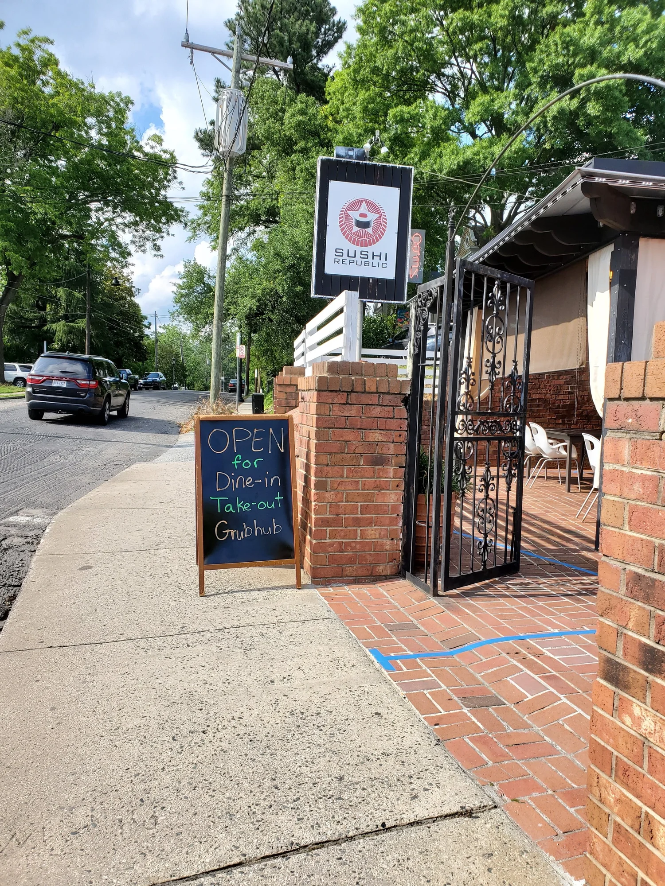
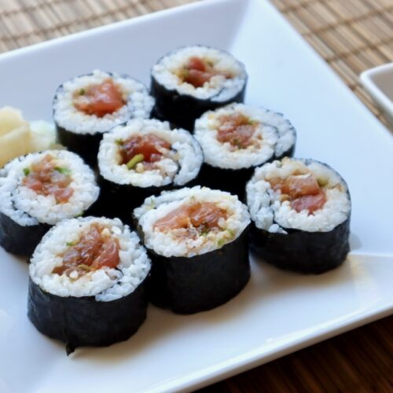
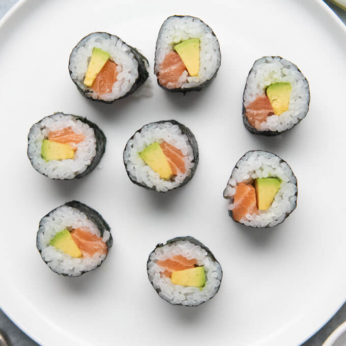
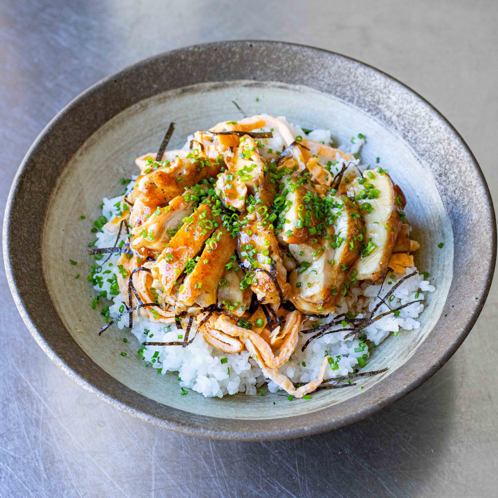
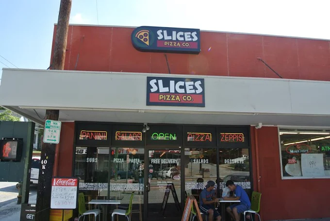
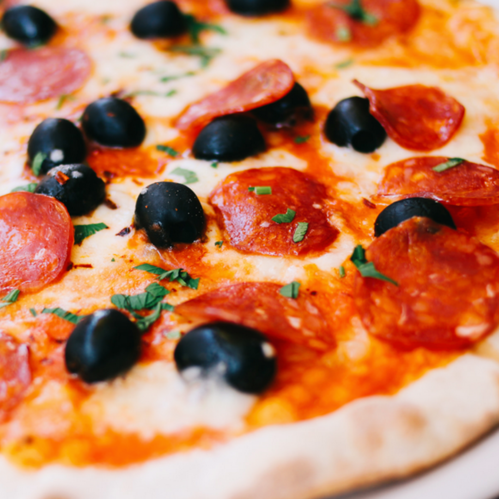
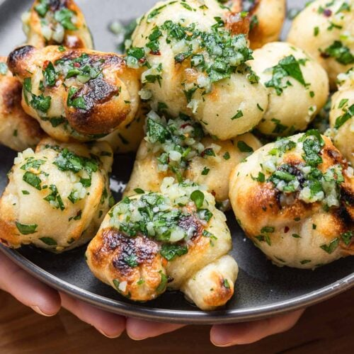
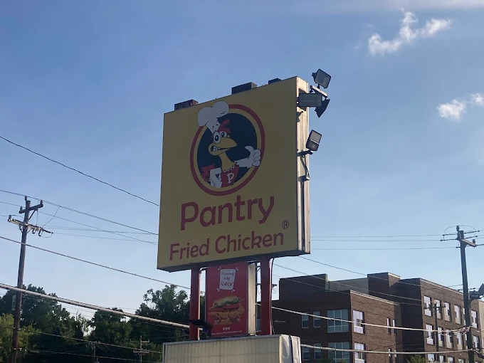
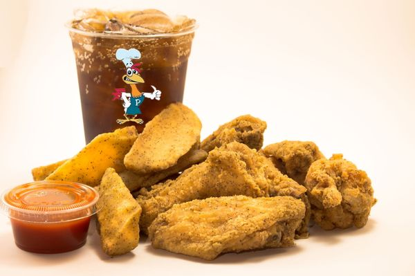
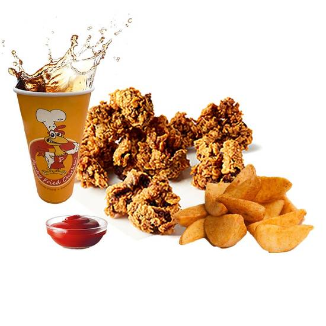

Image credit: restaurant website.
A nearby sushi spot with quick service and a mix of rolls,
bowls, and appetizers.
It is close to Petty Building and works well for a quick lunch
or takeout between classes.

Spicy Tuna Roll
Classic roll with a little heat and a clean finish.

Salmon Avocado Roll
Rich salmon with creamy avocado in a simple roll.

Chicken Teriyaki Bowl
Warm rice bowl with glazed chicken and vegetables.

Image credit: restaurant website.
A classic pizza stop close to campus with fast service and
big slices.
Great for a quick lunch, with affordable options and casual
seating.

Pepperoni Slice
Thin crust, crisp edges, and a savory bite.

Garlic Knots
Buttery knots with herbs, perfect for sharing.

Cheese Calzone
Warm and cheesy with a soft, golden crust.

Image credit: Steven Dillon (Google Images).
A nearby favorite for crispy fried chicken and Southern sides.
It is close to campus, offers quick counter service, so it's a convenient choice for those who don't have much time between classes.

Fried Chicken Plate
Golden chicken with a choice of classic sides.

Crispy Chicken Sandwich
Crunchy fillet, soft bun, and a side of your choice.

Chicken Gizzards
Crispy bites with a savory, seasoned coating. Comes with a choice of dip.